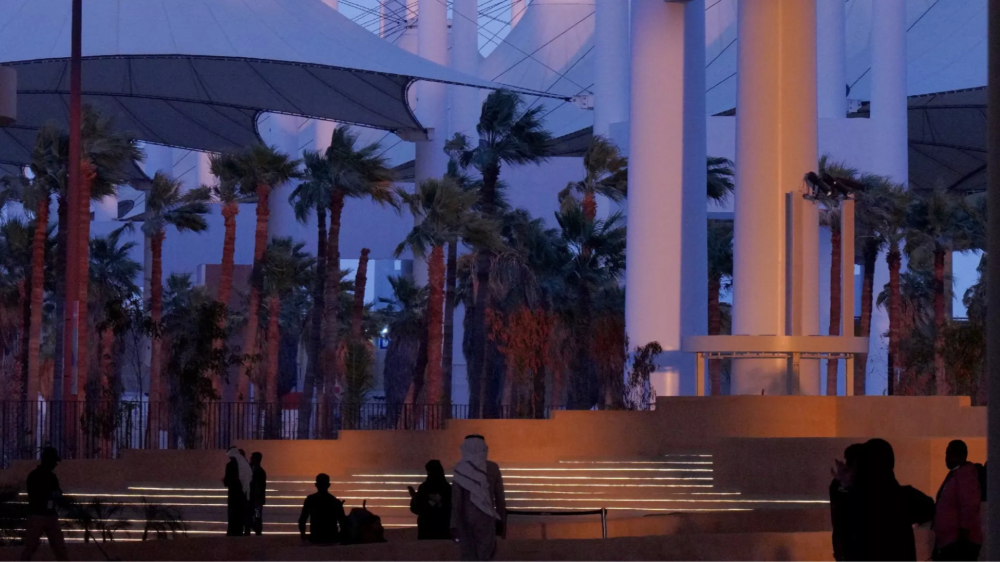
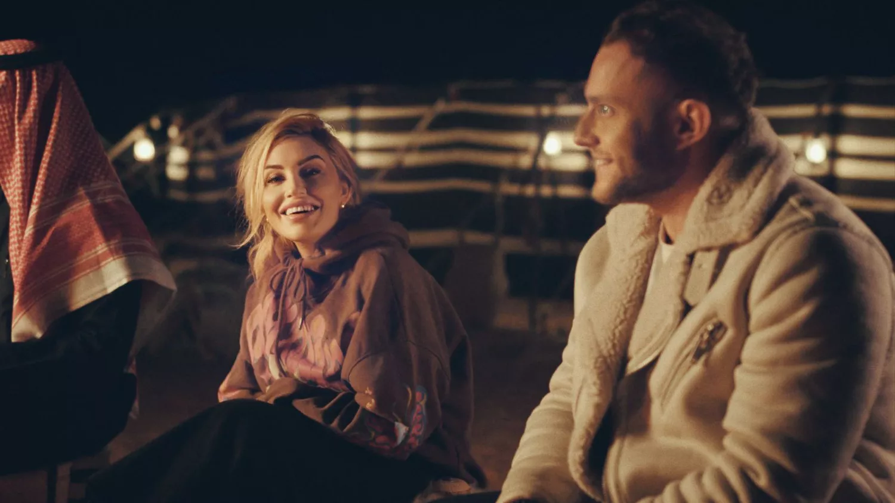
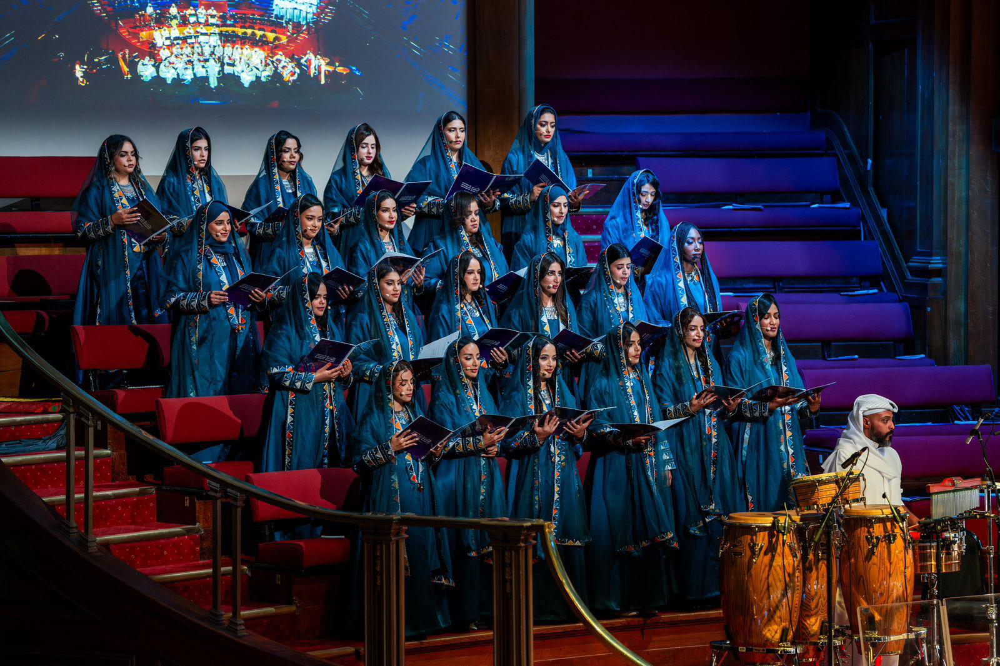
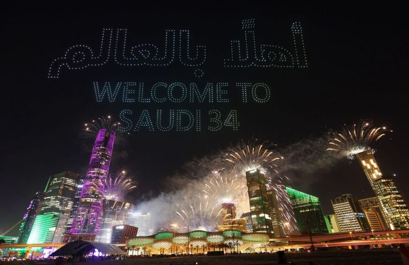

بينالي الفنون
يقدم بينالي الفنون الإسلامية 2025 رؤية شاملة حول الفنون الإسلامية من مختلف أنحاء العالم، حيث يضم مشاركات من أكثر من 30 مؤسسة دولية كبرى، و29 تكليفاً فنياً جديداً من أكثر من 30 فناناً من المملكة والوطن العربي والعالم

هنا العُلا
تكرس الهيئة الملكية لمحافظة العلا جهودها لمشاركة الجمال المذهل والتاريخ الراسخ لمحافظة العلا مع العالم، ومن خلال تنظيم التجارب بعناية التي تلبي مجموعة واسعة من الاهتمامات

تجارب مُلهمة
ننقل لكم قصصًا وتجارب من استكشفوا روح السعودية، حيث تلتقي التقاليد العريقة مع التقدم العصري، في كل زاوية من أرض المملكة. نعرض لكم كيف تحتفل السعودية بضيوفها، وكيف توفر بيئة فريدة للعيش، تجمع بين جمال الطبيعة وروعة الحضارة.

الاوركسترا السعودية
تجمع الألحان السعودية بين التراث والحداثة، لتخلق تجربة موسيقية فريدة تعكس الهوية الثقافية للمملكة وتبرز روح الإبداع والتطور في جميع المجالات
